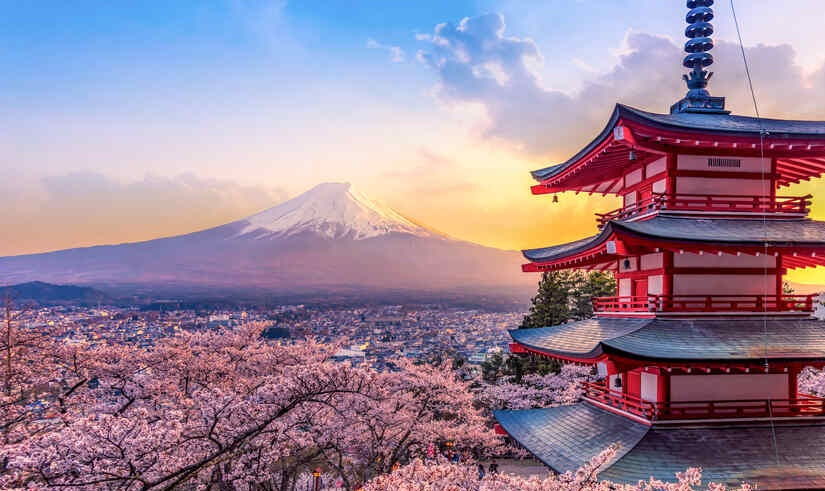

🌸 Cultura única e milenar
O Japão é um país conhecido por sua forte preservação cultural. Mesmo sendo uma das nações mais tecnológicas do mundo, os japoneses mantêm tradições antigas como a cerimônia do chá, o uso de Quimonos e festivais tradicionais. Essa mistura entre o moderno e o tradicional torna o país extremamente fascinante para visitantes e estudiosos. Um dos pilares da cultura japonesa é o conceito de Wabi-sabi, que valoriza a imperfeição, a simplicidade e o caráter passageiro das coisas. Diferente de culturas que buscam perfeição absoluta, no Japão há beleza no desgaste, no envelhecimento e no incompleto. Outro conceito importante é o Ikigai, que significa “razão de viver”. Ele está ligado à ideia de encontrar propósito na vida através da interseção entre o que você ama, o que faz bem, o que o mundo precisa e o que pode te sustentar.

🍣 Alimentação diferente e saudável
A culinária japonesa é famosa mundialmente, especialmente por pratos como sushi, sashimi e ramen. Além disso, a alimentação no Japão é considerada uma das mais saudáveis do mundo, com grande consumo de peixes, arroz e vegetais. Isso contribui para a alta expectativa de vida da população japonesa. A comida no Japão não é apenas nutrição, mas também estética e tradição. Um exemplo é o Bento, que é preparado de forma visualmente equilibrada e bonita. Existe também o princípio do Itadakimasu, dito antes das refeições como forma de gratidão pela comida e por todos que participaram de sua produção.
🚄 Tecnologia de ponta
O Japão é líder global em inovação tecnológica. Um exemplo impressionante são os trens-bala, conhecidos como Shinkansen, que podem atingir velocidades superiores a 300 km/h. Além disso, o país investe fortemente em robótica, inteligência artificial e eletrônicos de última geração. O mais fascinante no Japão é como o antigo e o moderno coexistem. Em cidades como Tóquio, você pode encontrar templos centenários ao lado de arranha-céus e tecnologia de ponta. Enquanto isso, bairros como Akihabara representam a cultura pop moderna (animes, games), mostrando como o Japão consegue preservar o passado enquanto lidera o futuro.
🏯 Respeito e organização social
No Japão, o respeito e a organização social são guiados por valores culturais profundos como o Wa, que prioriza a harmonia coletiva acima dos interesses individuais. Isso se reflete no comportamento cotidiano, onde as pessoas evitam conflitos diretos e agem com extrema educação. A dinâmica entre Honne e Tatemae mostra como sentimentos pessoais muitas vezes são controlados em público para manter o equilíbrio social. Essa mentalidade também explica a organização impressionante do país, vista em filas ordenadas, transporte pontual e espaços públicos limpos, resultado de um forte senso de responsabilidade coletiva e disciplina internalizada desde a infância.
Essa quantidade de nomes vem muito pela influência cultural de seus deuses e mitos, além também da influência chinesa no país.
Então é isso! Espero que você tenha gostado do nosso artigo com algumas curiosidades sobre o Japão e sua história.